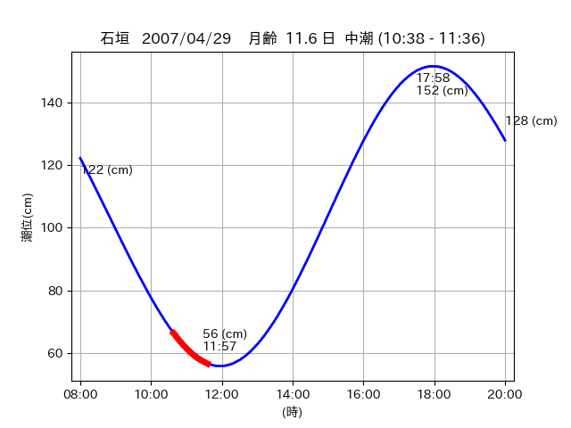
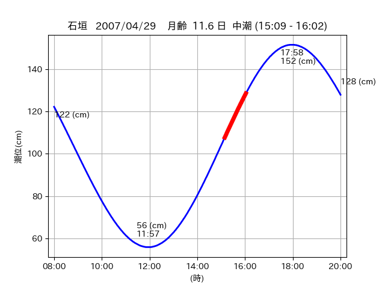

<!DOCTYPE html>
<html>
<head>
    
    <meta http-equiv="content-type" content="text/html; charset=UTF-8" />
    
        <script>
            L_NO_TOUCH = false;
            L_DISABLE_3D = false;
        </script>
    
    <style>html, body {width: 100%;height: 100%;margin: 0;padding: 0;}</style>
    <style>#map {position:absolute;top:0;bottom:0;right:0;left:0;}</style>
    <script src="https://cdn.jsdelivr.net/npm/leaflet@1.9.3/dist/leaflet.js"></script>
    <script src="https://code.jquery.com/jquery-3.7.1.min.js"></script>
    <script src="https://cdn.jsdelivr.net/npm/bootstrap@5.2.2/dist/js/bootstrap.bundle.min.js"></script>
    <script src="https://cdnjs.cloudflare.com/ajax/libs/Leaflet.awesome-markers/2.0.2/leaflet.awesome-markers.js"></script>
    <link rel="stylesheet" href="https://cdn.jsdelivr.net/npm/leaflet@1.9.3/dist/leaflet.css"/>
    <link rel="stylesheet" href="https://cdn.jsdelivr.net/npm/bootstrap@5.2.2/dist/css/bootstrap.min.css"/>
    <link rel="stylesheet" href="https://netdna.bootstrapcdn.com/bootstrap/3.0.0/css/bootstrap-glyphicons.css"/>
    <link rel="stylesheet" href="https://cdn.jsdelivr.net/npm/@fortawesome/fontawesome-free@6.2.0/css/all.min.css"/>
    <link rel="stylesheet" href="https://cdnjs.cloudflare.com/ajax/libs/Leaflet.awesome-markers/2.0.2/leaflet.awesome-markers.css"/>
    <link rel="stylesheet" href="https://cdn.jsdelivr.net/gh/python-visualization/folium/folium/templates/leaflet.awesome.rotate.min.css"/>
    
            <meta name="viewport" content="width=device-width,
                initial-scale=1.0, maximum-scale=1.0, user-scalable=no" />
            <style>
                #map_f30063408f85b0c0f422d5a1c50d55a0 {
                    position: relative;
                    width: 2048.0px;
                    height: 1600.0px;
                    left: 0.0%;
                    top: 0.0%;
                }
                .leaflet-container { font-size: 1rem; }
            </style>
        
</head>
<body>
    
    
            <div class="folium-map" id="map_f30063408f85b0c0f422d5a1c50d55a0" ></div>
        
</body>
<script>
    
    
            var map_f30063408f85b0c0f422d5a1c50d55a0 = L.map(
                "map_f30063408f85b0c0f422d5a1c50d55a0",
                {
                    center: [24.367, 123.959],
                    crs: L.CRS.EPSG3857,
                    ...{
  "zoom": 12,
  "zoomControl": true,
  "preferCanvas": false,
}

                }
            );

            

        
    
            var tile_layer_e97f4ac9407c9c7942f452bdcfd073e3 = L.tileLayer(
                "https://cyberjapandata.gsi.go.jp/xyz/seamlessphoto/{z}/{x}/{y}.jpg",
                {
  "minZoom": 0,
  "maxZoom": 18,
  "maxNativeZoom": 18,
  "noWrap": false,
  "attribution": "\u5730\u7406\u9662\u5730\u56f3",
  "subdomains": "abc",
  "detectRetina": false,
  "tms": false,
  "opacity": 1,
}

            );
        
    
            tile_layer_e97f4ac9407c9c7942f452bdcfd073e3.addTo(map_f30063408f85b0c0f422d5a1c50d55a0);
        
    
            var marker_4ad3201b515ae858db7f3304d99975a5 = L.marker(
                [24.472, 123.8016],
                {
}
            ).addTo(map_f30063408f85b0c0f422d5a1c50d55a0);
        
    
            var icon_efd281416d2f6b8064741ffc3ca50ae2 = L.AwesomeMarkers.icon(
                {
  "markerColor": "orange",
  "iconColor": "white",
  "icon": "info-sign",
  "prefix": "glyphicon",
  "extraClasses": "fa-rotate-0",
}
            );
        
    
        var popup_f7586353124ae9b027075fbccc864f03 = L.popup({
  "maxWidth": "100%",
});

        
            
                var html_5d764145094e5f81da9d675483a7bb80 = $(`<div id="html_5d764145094e5f81da9d675483a7bb80" style="width: 100.0%; height: 100.0%;"><table><tr><td></td></tr><tr><td><center>20070429 No.1 </center></table></td></tr></table</div>`)[0];
                popup_f7586353124ae9b027075fbccc864f03.setContent(html_5d764145094e5f81da9d675483a7bb80);
            
        

        marker_4ad3201b515ae858db7f3304d99975a5.bindPopup(popup_f7586353124ae9b027075fbccc864f03)
        ;

        
    
    
                marker_4ad3201b515ae858db7f3304d99975a5.setIcon(icon_efd281416d2f6b8064741ffc3ca50ae2);
            
    
            var poly_line_3ebb00543a93b020d8d9e1085eeee394 = L.polyline(
                [[24.472, 123.8016], [24.4815, 123.8025]],
                {"bubblingMouseEvents": true, "color": "#FF00FF", "dashArray": null, "dashOffset": null, "fill": false, "fillColor": "#FF00FF", "fillOpacity": 0.2, "fillRule": "evenodd", "lineCap": "round", "lineJoin": "round", "noClip": false, "opacity": 1.0, "smoothFactor": 1.0, "stroke": true, "weight": 3}
            ).addTo(map_f30063408f85b0c0f422d5a1c50d55a0);
        
    
            var marker_502181735f2246698e02cd19a08fe210 = L.marker(
                [24.3408, 123.9494],
                {
}
            ).addTo(map_f30063408f85b0c0f422d5a1c50d55a0);
        
    
            var icon_36fd916d77be2aff6e2729a7914e1e24 = L.AwesomeMarkers.icon(
                {
  "markerColor": "orange",
  "iconColor": "white",
  "icon": "info-sign",
  "prefix": "glyphicon",
  "extraClasses": "fa-rotate-0",
}
            );
        
    
        var popup_c99de184a1223e10c55a46bac4157034 = L.popup({
  "maxWidth": "100%",
});

        
            
                var html_d28c432ff3b0377a8252151ec3e3bdfc = $(`<div id="html_d28c432ff3b0377a8252151ec3e3bdfc" style="width: 100.0%; height: 100.0%;"><table><tr><td></td></tr><tr><td><center>20070429 No.2 </center></table></td></tr></table</div>`)[0];
                popup_c99de184a1223e10c55a46bac4157034.setContent(html_d28c432ff3b0377a8252151ec3e3bdfc);
            
        

        marker_502181735f2246698e02cd19a08fe210.bindPopup(popup_c99de184a1223e10c55a46bac4157034)
        ;

        
    
    
                marker_502181735f2246698e02cd19a08fe210.setIcon(icon_36fd916d77be2aff6e2729a7914e1e24);
            
    
            var poly_line_82fd4e586cd90e8b97e3dfbd4a79534f = L.polyline(
                [[24.3408, 123.9494], [24.3477, 123.9516]],
                {"bubblingMouseEvents": true, "color": "#FF00FF", "dashArray": null, "dashOffset": null, "fill": false, "fillColor": "#FF00FF", "fillOpacity": 0.2, "fillRule": "evenodd", "lineCap": "round", "lineJoin": "round", "noClip": false, "opacity": 1.0, "smoothFactor": 1.0, "stroke": true, "weight": 3}
            ).addTo(map_f30063408f85b0c0f422d5a1c50d55a0);
        
    
            var marker_8ba28e6dfa1334c2fa2880ad6edf6616 = L.marker(
                [24.3645, 123.9566],
                {
}
            ).addTo(map_f30063408f85b0c0f422d5a1c50d55a0);
        
    
            var icon_9d9fab352a3c90755cbe00ae8812dc00 = L.AwesomeMarkers.icon(
                {
  "markerColor": "orange",
  "iconColor": "white",
  "icon": "info-sign",
  "prefix": "glyphicon",
  "extraClasses": "fa-rotate-0",
}
            );
        
    
        var popup_a08ac0b691d2139e4c0d9e7df682938f = L.popup({
  "maxWidth": "100%",
});

        
            
                var html_a9bcfb8d18752541a687c125eeedb7ac = $(`<div id="html_a9bcfb8d18752541a687c125eeedb7ac" style="width: 100.0%; height: 100.0%;"><table><tr><td></td></tr><tr><td><center>20070429 No.3 </center></table></td></tr></table</div>`)[0];
                popup_a08ac0b691d2139e4c0d9e7df682938f.setContent(html_a9bcfb8d18752541a687c125eeedb7ac);
            
        

        marker_8ba28e6dfa1334c2fa2880ad6edf6616.bindPopup(popup_a08ac0b691d2139e4c0d9e7df682938f)
        ;

        
    
    
                marker_8ba28e6dfa1334c2fa2880ad6edf6616.setIcon(icon_9d9fab352a3c90755cbe00ae8812dc00);
            
    
            var poly_line_56d46183db25c04b9f80e1df0566e346 = L.polyline(
                [[24.3645, 123.9566], [24.3698, 123.9612]],
                {"bubblingMouseEvents": true, "color": "#FF00FF", "dashArray": null, "dashOffset": null, "fill": false, "fillColor": "#FF00FF", "fillOpacity": 0.2, "fillRule": "evenodd", "lineCap": "round", "lineJoin": "round", "noClip": false, "opacity": 1.0, "smoothFactor": 1.0, "stroke": true, "weight": 3}
            ).addTo(map_f30063408f85b0c0f422d5a1c50d55a0);
        
</script>
</html>